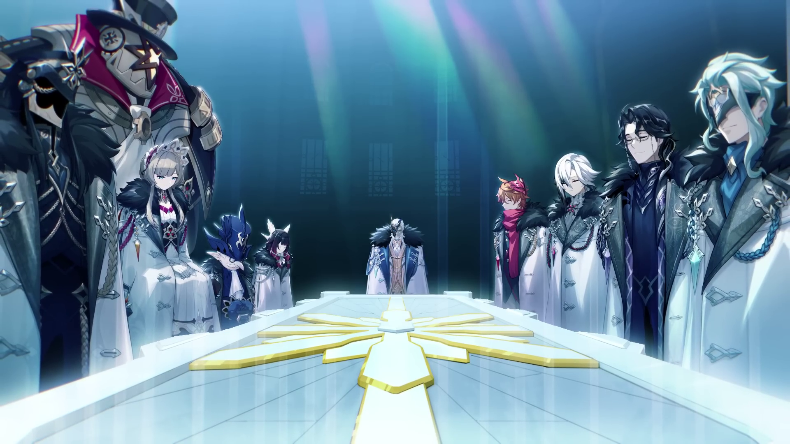

Released: September 28 2020
First Nation: Mondstadt
Latest Nation: Nod-Krai
Next Nation: Snezhnaya
Developer: HoYoverse
Genre: Open‑World RPG, Action, Fantasy
Overview of Genshin Impact
Genshin Impact launched in 2020 as an open‑world action RPG set in the fantasy world of Teyvat, where players explore seven nations inspired by real cultures. The story follows the Traveler searching for their lost sibling while uncovering each region’s politics, gods, and conflicts. Over time, the game expanded with major regions like Mondstadt, Liyue, Inazuma, Sumeru, Fontaine, Natlan, and Nod-Krai, each adding new characters, lore, and gameplay systems. With constant updates, events, and evolving story arcs involving the Fatui, Archons, and the mysterious Abyss, Genshin has grown into a massive, ongoing world known for its exploration, music, and cinematic storytelling.
The Peak Nations
Genshin Impact’s worldbuilding reaches its highest quality in three regions. These nations deliver the strongest writing, the most emotional Archon Quests, and the deepest lore expansions in the entire game.
Fontaine – The Nation of Justice
"Masquerade of the Guilty"
Fontaine is widely regarded as the pinnacle of Genshin storytelling. Its narrative blends mystery, tragedy, and political tension, all centered around the concept of justice. The Archon Quest explores the downfall of a nation built on surveillance, trials, and societal pressure, culminating in one of the most emotional finales in the game.
- Furina’s character arc — from performer to true Archon
- The prophecy of the Primordial Sea
- Neuvillette’s identity and the return of the Hydro Sovereign
- Massive cinematic sequences and moral dilemmas
- The introduction of The Knave, Arlecchino
Sumeru – The Nation of Wisdom
"Truth Amongst the Pages of Purana"
Sumeru’s Archon Quest is a philosophical deep dive into identity, consciousness, and the ethics of knowledge. Nahida’s story is one of the most beloved in the game, and the Akademiya’s corruption arc delivers some of the strongest emotional beats in the series.
- Nahida’s imprisonment and emotional growth
- The introduction of The Doctor, Dottore
- The battle against the Akademiya’s manipulation
- Scaramouche’s transformation into Wanderer
- Massive lore reveals about Irminsul and the Traveler
- The final showdown between The Doctor and The Traveler and Wanderer
- The subsequent burning of Irminsul
Nod Krai – The Frozen Frontier
"True Moon"
Nod Krai stands out for its darker tone, harsh environment, and heavy focus on survival and political tension. The region’s Archon Quest explores themes of loyalty, sacrifice, and the cost of power. Its atmosphere and storytelling depth make it a fan‑favorite.
- Cold, hostile landscapes with deep environmental storytelling
- Complex political factions and moral ambiguity
- High‑stakes character arcs and emotional payoffs
- One of the most mature tones in the entire game
- The anticipated meetings with the Harbingers Marionette and Damselette
- The return of The Doctor, Wanderer, and Arlecchino
- The final battle between The Doctor
Next Nation – Snezhnaya
"Everwinter Without Mercy"
Snezhnaya is the most anticipated region in Genshin Impact, expected to deliver the climax of the Traveler’s journey. As the land of the Tsaritsa and the Fatui Harbingers, it promises political intrigue, massive battles, and the final confrontation with the Cryo Archon.
- The Tsaritsa’s true intentions
- The fate of the Fatui Harbingers
- The Traveler’s confrontation with the Cryo Archon
- Potential endgame lore reveals about Celestia
Why These Nations Define the Peak
- High‑quality writing and emotional storytelling
- Massive worldbuilding expansions
- Complex Archon characters with real growth
- Cinematic boss fights and cutscenes
- Deep lore connections to the Traveler’s main quest
Sources
- HoYoverse Official Genshin Impact Website
- In‑Game Archon Quest Storylines
- Community Lore Compilations